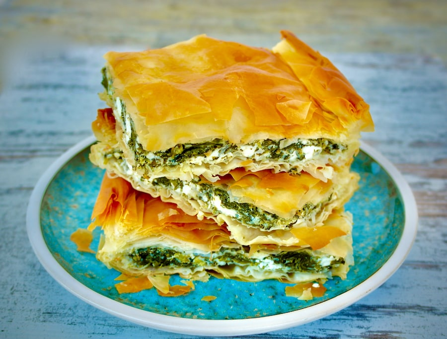

Spanakopita

Spanakopita is a traditional Greek spinach pie made with layers of phyllo dough, spinach, and feta cheese. It's a delightful dish with a flaky crust and a savory filling. Here's a recipe for Spanakopita:
Ingredients:
For the Filling:
- 1.5 pounds (700g) fresh spinach, washed and chopped
- 1 cup feta cheese, crumbled
- 1 cup ricotta cheese
- 1 cup green onions, finely chopped
- 2 tablespoons fresh dill, chopped
- 3 large eggs, beaten
- Salt and black pepper to taste
- Olive oil for sautéing
For the Phyllo Layers:
- 1 package of phyllo dough, thawed according to package instructions
- 1 cup unsalted butter, melted
Instructions:
- Prepare the Filling:
- In a large pan, sauté the chopped spinach in olive oil until wilted. Allow it to cool and then squeeze out any excess moisture.
- In a mixing bowl, combine the spinach with crumbled feta cheese, ricotta cheese, green onions, chopped dill, beaten eggs, salt, and black pepper. Mix well.
- Assemble the Spanakopita:
- Preheat the oven to 350°F (175°C).
- Brush a baking dish with melted butter.
- Layer 8-10 sheets of phyllo dough in the bottom of the dish, brushing each sheet with melted butter.
- Spread half of the spinach and cheese filling over the phyllo layers.
- Add another layer of 8-10 phyllo sheets on top of the filling, brushing each sheet with melted butter.
- Spread the remaining filling over this layer.
- Finish with a final layer of 8-10 phyllo sheets, again brushing each sheet with melted butter.
- Bake:
- Score the top layers of phyllo into squares or diamonds using a sharp knife.
- Bake in the preheated oven for 45-50 minutes or until the top is golden brown and crispy.
- Serve:
- Allow the Spanakopita to cool for a few minutes before slicing along the scored lines.
- Serve warm and enjoy this delicious Greek spinach pie!
Spanakopita can be served as an appetizer, side dish, or even a main course. The combination of flaky phyllo dough and the savory spinach and cheese filling is sure to be a hit.